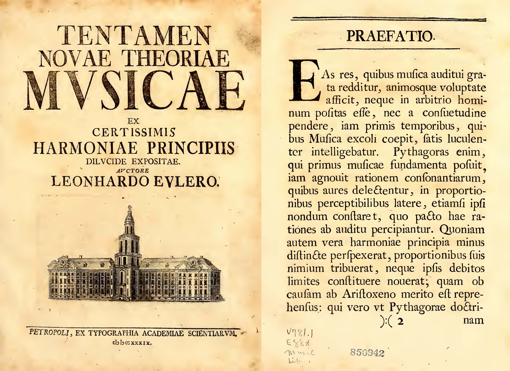
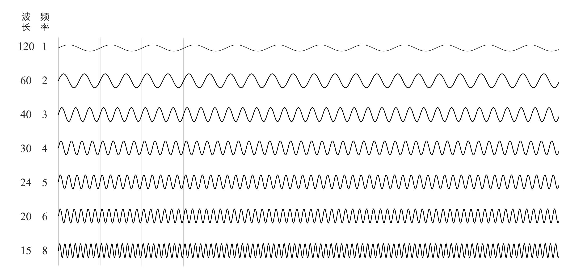
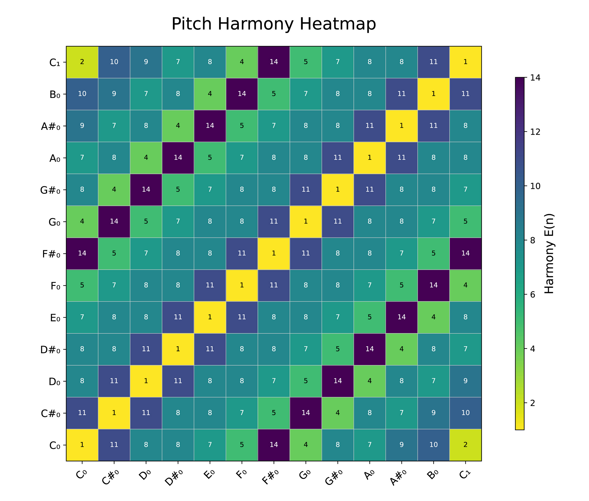
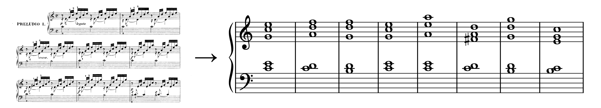
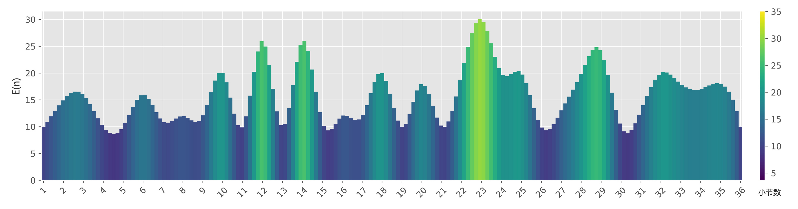
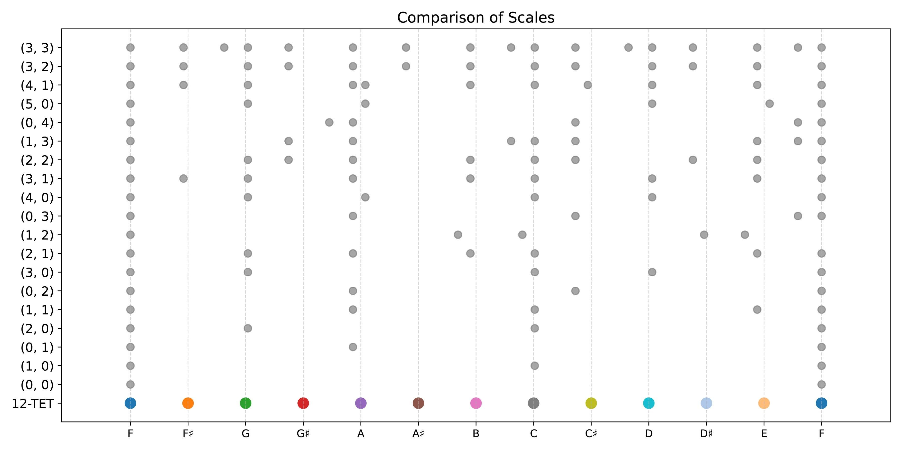
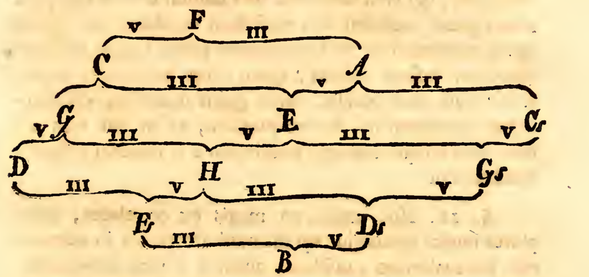

忘れられた数学の奇書：オイラーは数学で音楽をどのように説明したのか？『新しい音楽理論の試み』（Tentamen novae theoriae musicae）紹介
忘れられた数学の奇書：オイラーは数学で音楽をどのように説明したのか？『新しい音楽理論の試み』（Tentamen novae theoriae musicae）紹介1. はじめに2. 書籍の概要3. 調和と愉悦の数学的原理3.1 調和：音符に隠された秩序3.1.1 推測：オイラーの不協和度公式の物理的原理3.1.2 オイラーの不協和度公式の限界3.2 音程の不協和度の可視化3.3 和声の不協和度の可視化4. 調和しにくい音階——オイラーの新しい音楽体系4.1 オクターブをどのように分割するか4.2 オイラーの新しい音楽体系4.2.1 自然半音-半音音階 (diatonic-chromatic)4.2.2 自然半音-半音音階の調律4.2.3 新しい音楽体系5. 結論参考文献
1. はじめに
数学に興味を持つ人は誰でも知っているであろう名高い人物、レオンハルト・オイラー（Leonhard Euler）。彼は神の公式と呼ばれる

図：ルートヴィヒ・ヴァン・オイラーが音楽理論を研究中（フィクション）
しかし、オイラーが音楽理論にも関わっていたことを知っている人は少ないです。1739年、32歳のオイラーは『新しい音楽理論の試み：確固たる和声の原理に基づく明快な説明』（Tentamen Novae Theoriae Musicae Ex Certissimis Harmoniae Principiis Dilucide Expositae）を著し、音楽理論を数学の体系に組み入れることを試みました。しかしながら、この書籍は十分な注目を集めることがなく、海外でも関連資料は少なく、中国語圏ではほぼ無名です。幸運にも、一部学術論文や17th Century Mathの独立研究者がこの本をラテン語から英語に翻訳し、一般読者がその内容を覗くことができるようになっています。ラテン語の原版はこちらからダウンロード可能です。本記事は、中国語インターネットでこの本を包括的に紹介する最初の記事かもしれません。

音楽と数学の融合は古くからあり、ピタゴラスが音程と弦の長さの比率を発見したこと、中国の「三分損益法」、そして十二平均律の計算に至るまで、数学は常に音楽の理論基盤を提供してきました。ルネサンス以降、合理主義が台頭すると、数学者と音楽家は数学的言語で音楽を記述しようと試みます。オイラーもその一人で、彼は古代ギリシャ哲学とバロック音楽からのインスピレーションを受け、数学を用いて音階、音程、和声を研究し、様々な音律法を調和させる新しい体系を提唱しました。彼の研究は和声と調性を数学的に記述し、作曲法の指導も含まれています。
私自身の知識は限られていて、音楽と数学に関しては初心者レベルではありますが、本記事では『新しい音楽理論の試み』の一部をざっと探求し、主に興味を引かれる内容を紹介しています。この文章を通して、この奇書に興味を持ち、その奥深さに触れることを試みる読者が増えることを期待しています。
より良い読書体験を望む方は、このウェブページをご参照ください。去る前に「いいね」とブックマークをお願いします。
2. 書籍の概要
この記事では書籍の中からいくつかのシンプルで興味深い点に焦点を当てますが、中国語のインターネット上での紹介がほとんどないことを考慮し、まずその大まかな構造を紹介したいと思います。書籍の目次は以下の通りです（ページ番号はラテン語版に基づきます）：
- 第1章 音と聴覚について、1ページ
- 第2章 美感と和声の原則について、26ページ
- 第3章 音楽の総合的な研究について、44ページ
- 第4章 和声音程について、56ページ
- 第5章 和声音程の連続性について、76ページ
- 第6章 和声音程の配列について、90ページ
- 第7章 さまざまな音程の一般名称について、102ページ
- 第8章 音楽の音階タイプについて、113ページ
- 第9章 自然-半音階音階について、132ページ
- 第10章 その他のより複雑な音楽音階について、151ページ
- 第11章 自然-半音階音階における和声音程について、165ページ
- 第12章 自然-半音階音階における調と体系について、175ページ
- 第13章 特定の調と体系における作曲方法について、195ページ
- 第14章 調と体系の変換について、252ページ
私は本書を大まかに以下のような部分に分けられると考えています：
- 第1部は第1章と第3章で、これらの章では音や音楽について概念的に研究しており、背景知識を理解するのに役立ちます。
- 第2部は第2章、第4章、第7章で、ここでは音程と和声について研究しています。
- 第3部は第5章と第6章で、ここではより大きな視点に立ち、単一の和音から完全な音楽作品へと研究を拡大します。
- 第4部は第8章、第9章、第10章で、オイラーは数学的手法を用いて音階を生成しています。
- 第5部は第11章、第12章、第13章、第14章で、オイラーは前述の理論に基づき新たな音楽理論体系を構築し、調律や作曲について指導を行っています。
この書籍はわずか300ページほどで、オイラーの全著作と比べると取るに足らないように思えるかもしれませんが、その中に含まれる精妙な思想は、一般の読者が1年半から2年間専念して研究するに値するものです。本稿では、バロック時代のオイラーがどのように数学を駆使して音楽理論を説明したのかを、読者とともに感じていきます。
3. 調和と愉悦の数学的原理
本章の内容は、主に原書の第2章と第4章に対応しています。まず明確にしておきたいのは、オイラーの音楽理論体系が注目する次元は2つ——音高と持続時間（リズム）のみであるということです。確かに、音量などの要素も音楽の効果に影響を与え、一定の法則性を持っていますが、オイラーはそれを主観的で随意性が高いと考え、体系には組み入れませんでした。
この点で思い出されるのは、Bilibiliのup主王乐乐乐游がある動画で「織体（テクスチャ）」について定義したことです。彼は、織体とは、音色をコントロールできない場合に、どのように音の組織化だけで豊かな音響を描き出すか、という点に言及しています。バッハの時代のチェンバロが音量制御に極めて限界があったことを考慮すると、音高とリズムは音楽の骨格を形成し、音色と音量は音楽の血肉と言えます。オイラーの研究目標は、この「血肉」を取り除き、音楽の「骨格」に焦点を当てることでした。
3.1 調和：音符に隠された秩序
音楽におけるすべての喜びは、複数の数字に存在する比率の感知から生じる。なぜなら、時間の持続も数字で表すことができるからです。 ——オイラー
調性音楽システムにおいて、音楽が「美しい」かどうかは、和声の観点から見ると少なくとも2つの核心要素に関係します。一つは和声そのものの調和の度合い、もう一つは和声間の接続と移行です。ここでは前者に注目します。我々は、異なる音程によって調和の度合いが大きく異なることを知っています。例えば、完全五度は比較的調和が取れていますが、短二度や長七度は耳障りです。また、異なる和音の聴感覚にもそれぞれ特徴があります。例えば、長三和音（C-E-G）はその安定性から心地よく感じられる一方で、減七和音（B-D-F-A♭）は緊張感があります。オイラーは、調和の本質は音の中に隠された「秩序」による喜びであると考えました。この秩序は純粋に主観的な感覚や特定の文化に限定される現象ではなく、数学で説明できる普遍的な客観的法則です。
この理論はオイラーが初めて提唱したものではなく、その起源は古くに遡ります。もし読者がある程度の音楽理論の基礎を持っているならば、この理論についてある程度の理解があるでしょう。例えば、2つの音の周波数比が2:1であるとき、それらはオクターブを構成し、この比率関係は非常に単純です。これは人間がこの音の秩序を最も明確に感知する理由です。同様に、周波数比が3:2であるとき（つまり完全五度）、それも調和が取れていると考えられます。これはまた単純な数学的関係だからです。一般的に、調和の取れた音は心地よく聞こえるのは、周波数間に単純で明確な整数比の関係があるからです。比率が単純であればあるほど悅耳に聞こえ、比率が複雑であれば（例えば無理数に近づくほど）耳障りに感じられます。
オイラーはさらに、調和と喜びは関連しているが同一ではないことを指摘しています。オイラーは彼の著書でこう述べています：
したがって、感動を与えることと笑いを引き起こすことは同じではなく、悲しみを引き起こすことと不快感を呼ぶことも対立するものではないことがわかります。その理由については、ある程度説明しました：秩序を感知できるものはすべて、喜びをもたらします。その中で、秩序がより単純で理解しやすいものは、そのまま喜びを引き起こし、逆に秩序がより複雑で感知しにくいものは、しばしば悲しさを感じることになります。
ここで示されているように、オイラーの「愉悦」は単なる楽しさを意味するのではなく、「心を打つ」、「好ましい」、そして「美を感じる」という意味合いを含んでいます。一般に、調和の取れた音は人を喜ばせ、不調和な音は悲しませますが、これらはすべて秩序に従っている限りであり、その秩序を感じ取る難しさが異なるだけです。しかし、全く秩序がない音符は不快感を生みます。ちょうどオイラーが述べたように：
もし我々がある物事において秩序を感じ取れない場合、愉悦の度合いは減少します。完全に秩序を見出せなければ、提示されたものに対して全く愛情を感じなくなります。そして、もし我々が秩序を感じられないだけでなく、物事が理性に反しており、本来存在し得た秩序を乱していることが判明した場合、それに対して嫌悪感を抱き、ほとんど苦痛を伴うほどの感覚でそれを認識するでしょう。
20世紀に入って調性音楽が発展し尽くした後、シェーンベルクが無調性音楽の体系を提案し、これまでの規則を打ち破ったのは周知の事実ですが、ここではそれを議論するつもりはありません。
もちろん、数学者であるオイラーは単に概念を探求するだけでなく、著書の中で任意の和音の調和程度を評価するための不調和度を測る公式を提案しています。具体的な公式は以下の通りです：
ここで：
具体例を挙げましょう：
完全五度：比率は
- 最小公倍数：
- 素因数分解：
- 計算：
- 最小公倍数：
完全三度：比率は
- 最小公倍数：
- 素因数分解：
- 計算：
- 最小公倍数：
このアルゴリズムはPythonで実装可能で、興味のある読者はGithubリポジトリにてコードをダウンロードし確認することができます。読者は自身で実行し検証してください。
3.1.1 推測：オイラーの不協和度公式の物理的原理
我々はすでに、比率が単純であればあるほど、聴覚的に調和が取れていることを知っています。では、この「単純さ」をどのように定量化するのでしょうか？ここで仮に、比率が既に最簡単な互いに素の形式であるとします。例えば、分子と分母の和がその複雑さを反映していると直感的に考えるかもしれません。例えば、
オイラーはここで、より拡張性があり物理的な意味を持つ指標として最小公倍数（LCM）を計算しました。この方法の利点は、2つの音の周波数比だけでなく、複数の音の場合にも容易に拡張できることです。その後、素因数分解を行い、素因数の個数に基づいて計算します。なぜ最小公倍数と素因数分解を用いるのか？その理由には、音波の「ずれ具合」が関係しているのではと考えられます。音波がずれると、不規則な「ピーク」やゼロ点が発生し、不協和感の原因になるかもしれません。また、倍音列の重なり具合とも関連があるかもしれません。周波数比が

3.1.2 オイラーの不協和度公式の限界
和音の協和の程度や任意の音の不快さについての人間の認識も徐々に進化してきました。最初は単純な整数比に基づいて理解され、初期の学者たちは「音波が時間や空間の領域で容易に同期して重なる」と説明していました。しかし、これは非常に大まかな理解であり、その後の研究、例えば共鳴理論やその後の聴覚生理学の研究、さらには20世紀の心理音響実験によって、不協和感は「ビート」、内耳基底膜の周波数帯の重なり、聴覚マスキング、そして二次音間の「相互干渉」と関係していることが示されました。
現代の聴覚科学では、「不協和度」を定量化するための最も一般的で基本的な指標の一つが「ビートの粗さ」です。2つ以上の近いが異なる周波数の音源が同時に聴こえると、内耳に周期的な干渉が発生し、ビートが生じます。ビートは一定の範囲内（約20–40 Hz程度）で「粗い」または刺激的に感じられることがあります。具体的な定量化方法として、PlompとLeveltによる音程の協和度理論があります。
実際に、多くの視覚や聴覚に関する理論は、生理学や心理学と組み合わせて解釈される必要があります。例えば、人間の目が異なる色に対して持つ感度は異なります（参考：スペクトル視光効率曲線）、人間の耳は異なる周波数の音に対して異なる音量の感度を持っています（参考：等ラウドネス曲線）。これらの曲線の形状は地域や民族によっても異なる可能性があります。したがって、オイラーが初等数学を用いて不協和度の現象を説明しようとしたことには限界があります。さらに、オイラーが音色や音量を排除したため、この理論の普遍性は低下しており、和音にのみ適用可能であり、全ての音に拡張することはできません。
もちろん、偉大なオイラーもこれに気づいていなかったわけではありません：
私は（後に証明するように）、練習と繰り返しの聴取を通じて、最初は不快に感じた音楽を徐々に好きになることができることを否定しません。しかし、このいわゆる「十分な理由の原則」はそれによって覆されるわけではありません。私たちはその対象そのものがなぜ私たちを喜ばせたり嫌わせたりするのかという理由を探る必要があると同時に、感覚が対象のイメージをどのように心に伝えるか、心が提示されたイメージに対してどのように判断するかを考慮しなければなりません。これらの要因は人によって異なる場合もあるため、同じ事象がある人には好かれ、他の人には嫌われることがあるのは驚くべきことではありません。 ——オイラー
おそらく彼は、問題の主要な矛盾を捉え、大まかに見合った枠組みを提供したかったのでしょう。オイラーはその優れた数学的直感で知られており、このような簡潔で広範な説明力を持つ公式を提唱したことは本当に世を驚かせました。
3.2 音程の不協和度の可視化
各音程の近似比率を代入すると、以下の表が得られます：
| 名称 | 近似比率 | 最小公倍数 (n) | 素因数分解 | 次数 E(n) |
|---|---|---|---|---|
| 純一度（Unison） | 1:1 | 1 | - | 1 |
| 短二度（Minor Second） | 16:15 | 240 | 11 | |
| 長二度（Major Second） | 9:8 | 72 | 8 | |
| 短三度（Minor Third） | 6:5 | 30 | 8 | |
| 長三度（Major Third） | 5:4 | 20 | 7 | |
| 完全四度（Perfect Fourth） | 4:3 | 12 | 5 | |
| 増四度（Tritone） | 45:32 | 1440 | 14 | |
| 完全五度（Perfect Fifth） | 3:2 | 6 | 4 | |
| 短六度（Minor Sixth） | 8:5 | 40 | 8 | |
| 長六度（Major Sixth） | 5:3 | 15 | 7 | |
| 短七度（Minor Seventh） | 16:9 | 144 | 9 | |
| 長七度（Major Seventh） | 15:8 | 120 | 10 | |
| 完全八度（Octave） | 2:1 | 2 | 2 |
これをヒートマップとして可視化すると以下のようになります：

図からわかるように、結果は私たちの経験と基本的に一致しています。単音の不協和度は1で最も調和が取れています。属音や下属音は比較的調和が取れていますが、短二度や七度などは比較的不協和です。増四度の値は予想よりも大きいですが、これは理にかなっています。この音は古代中国で「変徴の音」と呼ばれ、五音音階を破り、悲しみ、嘆き、憂鬱、またはその他の複雑な感情を表現するために使用されました。この表は近似比率に基づいており、参考としてのみ使用してください。
3.3 和声の不協和度の可視化
前述の通り、オイラーのアルゴリズムは複数の音を含む和音にも拡張可能です。ここでは、バッハの「Cメジャー前奏曲」を例に処理を行います。まず、分解和音を柱状和音に戻します：

次に、Pythonコードを使用して和音を分析し、最終的に以下の図を得ます（滑らかさを保つために補間を行いました）：

この図から、不協和度の変化パターンが明確に見て取れます。音楽はまるで呼吸するかのように起伏し、緊張と緩和の中で発展していきます。これにより伝統的な音楽理論の基盤となる論理を別の側面から理解することができます。
上記の2つの図の生成コードは、Githubリポジトリで入手可能です。
ここで読者は疑問に思うかもしれません。和声のT-S-D-Tの進行において、各和音が全て正三和音の基本形のみを使用する場合、不協和度は全て同じになるため、音楽の発展はどのようにして生まれるのか？これが次の内容、つまり和声の接続における不協和度です。
オイラーは第4章で和声理論をさらに研究していますが、ここでは触れません。興味のある読者は各自で読んでみてください。また、オイラーは第5章と第6章で和声の接続理論を研究し、単一の和音に対する定量化手法を和音のシーケンスに拡張し、音楽全体の調和度を分析しました。この部分もここでは触れません。
4. 調和しにくい音階——オイラーの新しい音楽体系
この節は主に原書の第8章に対応しています。音楽に基本的な知識を持つ読者であれば、長音階、短音階、ドリアン音階、半音階、五声音階などの一般的な音階に詳しいでしょう。これらの音階は、中国の三分損益法、古代ギリシャの五度相生律、後に発展した純正律、十二平均律などの様々な方法で生成されます。
初期の音階生成法は、常に単純な比率の原則に基づいていました。たとえば、
このため、一見解決不能なトレードオフの問題に直面し、音律学者たちは音律を微調整し、せめて聴覚に心地よいようにするしかありませんでした。ここでは、オイラーがどのように数学的な手法を用いて音階を生成したかを見ていきます。
4.1 オクターブをどのように分割するか
まず、オイラーは一つの原則を確立しました：それは
ここで：
以下に、完全な計算過程を示します：
- 入力：
- 最終的に、
- 比率を互いに素な整数として再構成するために、ソートとスケーリングを行う。
注1：浮動小数点演算に誤差が生じることを懸念して、実際のコード実装では手順が異なることがあります。
注2：理論的には
と拡張して音階を生成することが可能で、素数を基数とすることを維持できますが、実際にはそのような拡張は使用されません。
以下に、
| 因数 | 整数スケール係数 | 最終周波数 | |
|---|---|---|---|
| 1 | 8 | ||
| 3 | 12 | ||
| 5 | 10 | ||
| 15 | 15 |
さらにオクターブ音
オイラーは、その著書で
| モード | a | b | 音階比率 | 音階 |
|---|---|---|---|---|
| I | 0 | 0 | F-F | |
| II | 1 | 0 | F-C-F | |
| III | 0 | 1 | F-A-F | |
| IV | 2 | 0 | F-G-C-F | |
| V | 1 | 1 | F-A-C-E-F | |
| VI | 0 | 2 | F-A-C♯-F | |
| VII | 3 | 0 | F-G-C-D-F | |
| VIII | 2 | 1 | F-G-A-B-C-E-F | |
| IX | 1 | 2 | F-G♯-A-C-C♯-E-F | |
| X | 0 | 3 | F-A-C♯-F*-F | |
| XI | 4 | 0 | F-G-A*-C-D-F | |
| XII | 3 | 1 | F-F♯-G-A-B-C-D-E-F | |
| XIII | 2 | 2 | F-G-A-B-C-C♯-D♯-E-F | |
| XIV | 1 | 3 | F-G♯-A-B♭-C-C♯-E-F♭-F | |
| XV | 0 | 4 | F-A*-A-C♯-F*-F | |
| XVI | 5 | 0 | F-G-A*-C-D-E♭-F | |
| XVII | 4 | 1 | F-F♯-G-A-A*-B-C-C♯-D-E-F |
注1：オイラーの原著では、HがBを、BがB♭を表すべきです。
注2：F*はFに非常に近い微細な音を示します。
これらの音階は以下の図として視覚化することができます。縦軸は

4.2 オイラーの新しい音楽体系
第9章では、オイラーが第18の音階を提案し、第10章ではさらに複雑な音階について探求しています。オイラーはまた、現実的な調律の手順を提示しました。全体的に見て、これらの生成された音階の一部は既存の音階とおおむね一致しますが、一部の音の周波数にはごくわずかなずれがあり、これが音階の修正となります。しかし、どの修正が良いのでしょうか？ここには少なくとも2つのルールがあります：まず1つ目は美しさで、音階は人間の生理的・心理的な法則に従い、美しさを感じさせるものであるべきです。2つ目は実用性です。音楽は楽器で演奏されるものであるため、演奏しにくく、転調が難しく、和声に適さない音階は理論上の存在にとどまってしまいます。
多くの音楽家は、真に求められる音楽は音程の均等性に基づくべきであり、単なる音程比の単純さに依存すべきではないと考えています。そこで彼らは迷わずオクターブを12の等しい部分に分割し、それに基づいて慣用的な12音を確立しました。この体系において、彼らはすべての音程が等しくなり、どの音楽作品もあらゆる調式で変更なしに演奏でき、原調から他のどの調式にも容易に転調できると確信しています。この点で、彼らは間違っていません。しかし、この方法が調式の和声的特性を実際に排除していることに彼らは気づいていませんでした。 ——オイラー
オイラーの野望は、一連の音階を生成する方法を見つけることでした：それらはまず旧来の音階とおおむね互換性があり、聴感を心地よく保ちつつ、特殊な状況に応じて修正を加える——いくつかの微分音を加えることで、ある和音をより純粋で調和的にするのです。そして、数学的方法を用いてこれらの音節の音程、和声、調律、転調などを研究し、完全に数学に基づいた一貫した音楽理論体系を形成します。これが第8章以降の内容です。ここで注目すべきは、この音楽理論体系はどのような作曲が不合理であるかを説明し、心地よい音楽の原理を明示し、作曲に対するいくつかの指針を提供しますが、計算によって音楽作品を創作することはできないということです。また、この体系は調和と不調和の境界を明確に規定しておらず、開放的なものです。したがって、この理論は実際には作曲家の創造性を抑制するものではありません。
注：ここで言うのは「一つの音階を生成する」ことではなく、「一連の音階を生成する方法を見つける」ことを指し、この体系が複数の調式を含み、互いに変換可能になることを目指しています。
4.2.1 自然半音-半音音階 (diatonic-chromatic)
第十八の音階を「自然半音-半音音階」と名付けることにします。この名称の由来は、その指数形式
にあります。この音階は「自然半音音階」の指数 と「半音音階」の指数 の最小公倍数であることから、これら二つの音階を組み合わせたものです。このため、現代の音楽家が一般的に受け入れている音階と一致している可能性があると考えられます。これは、音楽家達もこの音階を過去の自然半音と半音の結合として認識していたからです。 ——オイラー
簡単に言えば、「自然半音-半音音階」は、式
1計算 A = 3^3 * 5^2 * 7^0 * 11^0 = 6752A の因数: [1, 3, 5, 9, 15, 25, 27, 45, 75, 135, 225, 675]3生成音階: 512:540:576:600:640:675:720:768:800:864:900:960:10244音階の数（オクターブを除く）: 12
基準音を
| 音名 | 自然半音-半音音階の周波数 (Hz) | 十二平均律の周波数 (Hz) | 差異（Hz） | 差異（セント） |
|---|---|---|---|---|
| A | 440.0000 | 440.0000 | 0.0000 | 0.0000 |
| A♯ | 464.0625 | 466.1638 | 2.1013 | 7.8213 |
| B | 495.0000 | 493.8833 | -1.1167 | -3.9100 |
| C | 515.6250 | 523.2511 | 7.6261 | 25.4176 |
| C♯ | 550.0000 | 554.3653 | 4.3653 | 13.6863 |
| D | 580.0781 | 587.3295 | 7.2514 | 21.5076 |
| D♯ | 618.7500 | 622.2540 | 3.5040 | 9.7763 |
| E | 660.0000 | 659.2551 | -0.7449 | -1.9550 |
| F | 687.5000 | 698.4565 | 10.9565 | 27.3726 |
| F♯ | 742.5000 | 739.9888 | -2.5112 | -5.8650 |
| G | 773.4375 | 783.9909 | 10.5534 | 23.4626 |
| G♯ | 825.0000 | 830.6094 | 5.6094 | 11.7313 |
| A | 880.0000 | 880.0000 | 0.0000 | 0.0000 |
上の図 (Comparison of scales) は、
そのため、現在のオクターブの分割方法は、実践を通じて、すでに極限に近い完璧さに達しています。それをさらに完璧にするためには、次のような修正をするだけです：Bと名付けられた音を少し微分音下げることです（つまり、大半音と小半音の違い程度）。この修正を行うことで、最も完璧な音階が得られ、和声の形成に最適なものとなります。音階に含まれる音数も、この音階は和声が求める音数と完全に一致しており、余分でも足りないわけでもありません。さらに、これらの音の関係は和声の法則で決まる比率にも完全に合っています。 ——オイラー
注：ここでのBはB♭を指します。
4.2.2 自然半音-半音音階の調律

したがって、このように鋭敏な聴覚を持つ人は、以下の手順で楽器を調律することができます。まず、状況に応じて音Fを決定し、これを基にして同じ文字でマークされたすべての音高を取得します。次に、音Fからその純正五度のCと長三度のAを見つけ、これにより前述した最初の要件に基づいて、他の同じ文字でマークされたすべての音高を決定します。その後、音Cからその純正五度のGと長三度のEを得ます。このE音は同時にA音の純正五度でもあります。さらにA音からは長三度のC♯を得ます。次に、G音からその純正五度のDと長三度のBを得、E音からは長三度のG♯を得ます。このG♯音は、同時にC♯音の純正五度でもあります。その後、B音からその純正五度のF♯と長三度のD♯を得るか、G♯音からD♯を得ることも可能です。最後に、D♯の純正五度からBを見つけます。この手順でオクターブ音程を繰り返しながら、楽器全体を正しく調律することができます。
この調律プロセスは、追加の図表を使うことでさらに明確に理解できます。音E、B、G♯、F♯およびD♯は、純正五度と長三度の双方によって決定可能で、誤りが生じた際にもすぐに発見・修正できるため、楽器調律に大変役立ちます。
以上がオイラーの文献であり、説明は十分に明快ですので、これ以上の説明は省略します。図中の最右にあるC, G, Dの右下の蛇形の記号「s」はシャープを示しています。
4.2.3 新しい音楽体系
オイラーは、その後の章で彼の新しい音楽体系を構築しようとしました。たとえば、第11章では、この体系における協和音や和音を総括し、協和度に基づいて分類を行い、さらに使用方法についても説明しています。第12章においては転調について論じ、転調の前後で音階を
たとえ一つの体系内の変化がどれほど多様であっても、同じ体系を長時間続ければ、人は飽きてしまい、喜びを見出さなくなります。音楽は音と和声の調和だけでなく、多様性も必要とします。したがって、聴覚の対象は絶えず変化することが求められるのです。 ——オイラー
5. 結論
オイラーの『音楽の新理論の試み』は、数学と音楽を横断する驚異的な書物であり、オイラーが数学者としての深い力量を示すと同時に、芸術に対する鋭敏な感性をも体現しています。オイラーは単純な初等演算を用いて音楽を秩序と美の中に統一し、その手法はまさに驚嘆に値します。
オイラーは生涯にわたり多くの著作を残しており、私の知る限りでは、数年前に100年以上かけて整理されたオイラーの全集が出版され、その中にはこの書物も含まれているはずです。この本には、まだ多くの知恵の宝が隠されており、世の人々がそれを掘り起こすことができると信じています。当然ながら、この「古代の巻物」があれば既存の体系を覆したり革新したりできると考えるべきではありません。音楽理論と数学の結合はすでに非常に成熟した分野であり、音楽と数学はオイラーの時代以降、大いに発展しており、例えば群論を用いて音階を記述することなど、より精密に音楽現象を説明できるようになりました。しかし、古人の思想の断片を発見し、その知恵を感じること自体が、それはそれで興奮と意義に満ちたことではないでしょうか？
参考文献
xxxxxxxxxx51[1] Sándor26, J. (2009). Euler and music. A forgotten arithmetic function by Euler. Gao Mingzhe Some new Hilbert type inequalities and applications....... 4 Song-Zhimin, Dou-Xiangkai and Yin Li On some new inequalities for the Gamma function....... 14 Mihály Bencze, 17(1), 265-271.2[2] Pesic, P. (2013). Euler's Musical Mathematics. Mathematical Intelligencer, 35(2).3[3] Archibald, R. C. (1924). Mathematicians and music. The American Mathematical Monthly, 31(1), 1-25.4[4] Euler, L. (1739). Tentamen novae theoriae musicae: Ex certissimis harmoniae principiis dilucide exposita. Petropoli: Ex Typographia Academiae Scientiarum.5[5] Plomp, R., & Levelt, W. J. (1965). Tonal consonance and critical bandwidth. Journal of the Acoustical Society of America, 38, 548-560.